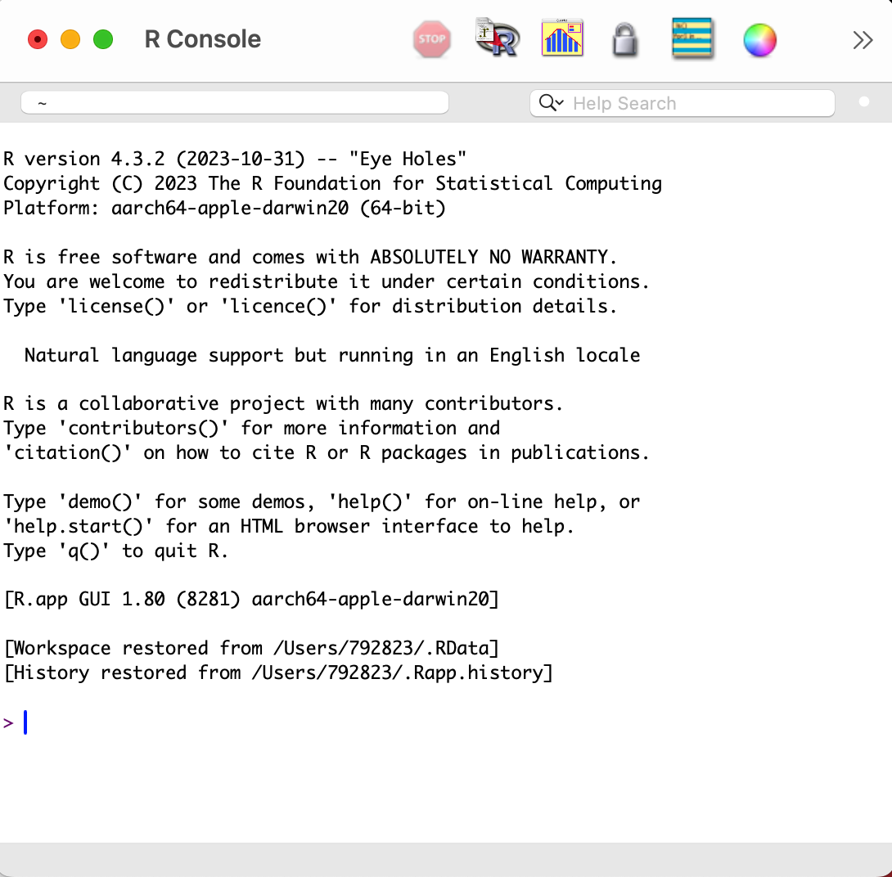
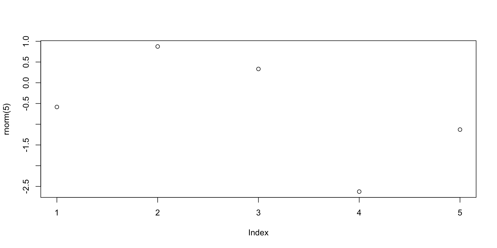
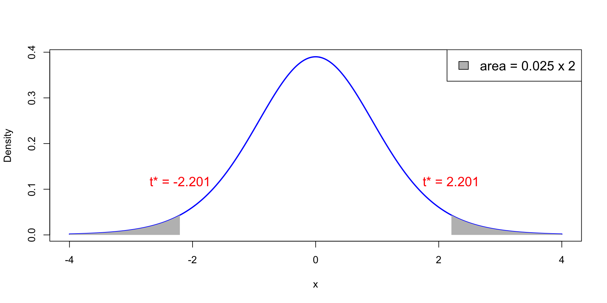
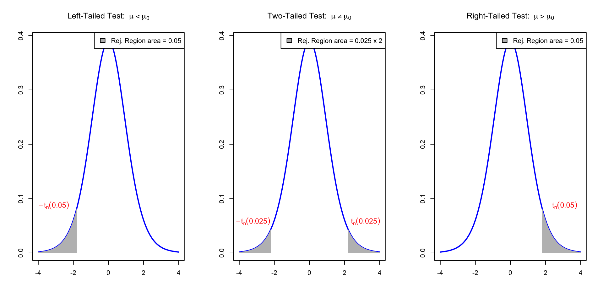
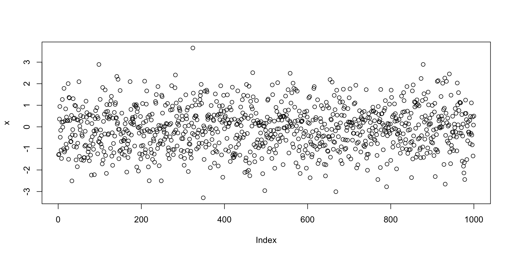

plot(rnorm(1000))Statistical Models
Lecture 3
Lecture 3:
Introduction to R &
The variance ratio test
Outline of Lecture 3
- The basics of R
- Vectors
- Graphics
- The t-test in R
- One-sample variance ratio test
- Worked example
- One-sample variance ratio test in R
Part 1:
The basics of R
What is R?
- R is a high-level programming language (like Python)
- This means R deals automatically with some details of computer execution:
- Memory allocation
- Resources allocation
- R is focused on manipulating and analyzing data
References
Slides are based on
Concise Statistics with R
Comprehensive R manual
Installing R on computer
- R is freely available on Windows, Mac OS and Linux
- To install:
- Download R from CRAN https://cran.r-project.org
- Make sure you choose the right version for your system
- Follow the instructions to install
How to use R?
We have installed R. What now?
Launch the R Console. There are two ways:
- Find the R application on your computer
- Open a terminal, type R, exectute
Don’t have a laptop in class: Run R code in browser
R application
This is how the R Console looks on the Mac OS app
R from terminal
This is how the R Console looks on the Mac OS Terminal

What can R do?
- R Console is waiting for commands
- You can use the R Console interactively:
- Type a command after the symbol
> - Press
Enterto execute - R will respond
- Type a command after the symbol
Warning
- The following slides might look like a lot of information
- However you do not have to remember all the material
- It is enough to:
- Try to understand the examples
- Know that certain commands exist and what they do
- Combining commands to create complex codes comes with experience
Simple code can lead to impressive results
Example: Plotting 1000 values randomly generated from N(0,1) distribution
R as a calculator
R can perform basic mathematical operations
Below you can see R code and the corresponding answer
R Scripts
The interactive R Console is OK for short codes
For longer code use R scripts
- Write your code in a text editor
- Save your code to a plain text file with
.txtor.Rextension - Execute your code in the R Console with
source("file_name.R")
Examples of text editors
- TextPad (Windows)
- TextEdit (MacOS)
- VisualStudio Code (Cross platform)
RStudio
- RStudio is an alternative to R Console and text editors: Download here
- RStudio is an Integrated Development Environment (IDE)
- It is the R version of Spyder for Python
- RStudio includes:
- Direct-submission code editor
- Separate point-and-click panes for files, objects, and project management
- Creation of markup documents incorporating R code
Working Directory
R console
R session has a working directory associated with it
Unless specified, R will use a default working directory
To check the location of the working directory, use the
getwdfunctionOn my MacOS system I get \qquad

File paths are always enclosed in double quotation marks
Note that R uses forward slashes (not backslashes) for paths
You can change the default working directory using the function
setwd

- File path can be relative to current working directory or full (system root drive)
Working Directory
RStudio
In RStudio you can set the working directory from the menu bar:
- Session
->Set Working Directory->Choose Directory
R Packages
- The base installation of R comes ready with:
- Commands for numeric calculations
- Common statistical analyses
- Plotting and visualization
- More specialized techniques and data sets are contained in packages (libraries)
Help!
- R comes with help files that you can use to search for particular functionality
- For example you can check out how to precisely use a given function
- To call for help type
help(object_name)
Further Help
- Sometimes the output of
help()can be cryptic - Seek help through Google
- Qualify the search with R or the name of an R package
- Paste an error message – chances are it is common error
- Even better: Search engines specialized for R
Example: Plotting random numbers
Let us go back to the example of the command plot(rnorm(1000))
The function rnorm(n) outputs n randomly generated numbers from N(0,1)
The above values can be plotted by concatenating the plot command
Note:
The values plotted (next slide) are, for sure, different from the ones listed above
This is because every time you call
rnorm(5), new values are generatedWe need to store the generated values if we want to re-use them (more later)
Example: Plotting random numbers

Variables and Assignments
- Values can be stored (assigned) in symbolic variables or objects
- The assignment operator in R is denoted by
<-
(an arrow pointing to the variable to which the value is assigned)
Example:
- To assign the value
2to the variablex, enterx <- 2 - To recover the value in
x, just typex
Variables and Assignments
Continuation of Example:
- From now on,
xhas the value2 - The variable
xcan be used in subsequent operations - Such operations do not alter the value of
x
Print and Cat
If you save the following code in a
.Rfile and run it, you will obtain no outputThis is because you need to tell R to print
xto screen
- To print a variable to screen use the function
print()
[1] 2Print and Cat
- Suppose you wish to print the sentence Stats is great! to screen
- To do this, we need to store this sentence in a string
- A string is just a sequence of characters enclosed by:
- double-quotations marks
- or single quotations marks
Print and Cat
- If now we wish to print the string
sentenceto screen we can use
- To avoid R displaying the quotation marks, we can instead use
cat()
Print and Cat
catcan be used to combine strings and variables in a single output
Example - Your first R code
- Open a text editor and copy paste the below code
Example - Your first R code
Save to a plain text file named either
my_first_code.Rmy_first_code.txt
Move this file to Desktop
Open the R Console and change working directory to Desktop
Example - Your first R code
- Run your code in the R Console by typying either
- You should get the following output
Code run successfully!The sum of 1 and 2 is 3The workspace
- Variables created in a session are stored in a Workspace
- To display stored variables use
ls()
The workspace
You can remove variables from workspace by using
rm()
The workspace
To completely clear the workspace use
rm(list = ls())
Saving the Workspace
- You can save the workspace using the command
save.image("file_name.RData")
- The file
file_name.RData- Is saved in the working directory
- Contains all the objects currently in the workspace
- You can load a saved workspace in a new R session with the command
load("file_name.RData")
Project Management
Recommended: keep all the files related to a project in a single folder
Such folder will have to be set as working directory in R Console
Saving the workspace could be dangerous
- This is because R Console automatically loads existing saved workspaces
- You might forget that this happens, and have undesired objects in workspace
- This might lead to unintended results
Always store your code in R Scripts
Exiting R and Saving
To quit the R Console type q()
- You will be asked if you want to save your session
- If you say YES, the session will be saved in a
.RDatafile in the working directory - Such file will be automatically loaded when you re-open the R Console
- I recommend you DO NOT save your session
Exiting R and Saving
Summary
- Write your code in R Scripts
- These are
.txtor.Rtext files - For later: Data should be stored in
.txtfiles - DO NOT save your session when prompted
Part 2:
Vectors
Vectors
- We saw how to store a single value in a variable
- Series of values can be stored in vectors
- Vectors can be constructed via the command
c()
Vectorized arithmetic
- A vector is handled by R as a single object
- You can do calculations with vectors, as long as they are of the same length
- Important: Operations are exectuted component-wise
# Constuct two vectors of radius and height of 6 cylinders
radius <- c(6, 7, 5, 9, 9, 7)
height <- c(1.7, 1.8, 1.6, 2, 1, 1.9)
# Compute the volume of each cylinder and store it in "volume"
volume <- pi * radius^2 * height
# Print volume
print(volume)[1] 192.2655 277.0885 125.6637 508.9380 254.4690 292.4823Vectorized arithmetic
- If 2 vectors do not have the same length then the shorter vector is cycled
- This is called broadcasting
- In the example the vector
ahas 7 components whilebhas 2 components - The operation
a + bis executed as follows:bis copied 4 times to match the length ofaa + bis then obtained by a + \tilde{b} = (1, 2, 3, 4, 5, 6, 7) + (0, 1, 0, 1, 0, 1, 0) = (1, 3, 3, 5, 5, 7, 7)
Vectorized arithmetic
Useful applications of broadcasting are:
- Multiplying a vector by a scalar
- Adding a scalar to each component of a vector
Sum and length
Two very useful vector operators are:
sum(x)which returns the sum of the components ofxlength(x)which returns the length ofx
x <- c(1, 2, 3, 4, 5)
sum <- sum(x)
length <- length(x)
cat("Here is the vector x:", x)
cat("The components of vector x sum to", sum)
cat("The length of vector x is", length)Here is the vector x: ( 1 2 3 4 5 )The components of vector x sum to 15The length of vector x is 5Computing sample mean and variance
Using vectorized operations
Given a vector \mathbf{x}= (x_1,\ldots,x_n) we want to compute sample mean and variance \overline{x} = \frac{1}{n} \sum_{i=1}^n x_i \,, \qquad s^2 = \frac{\sum_{i=1}^n (x_i - \overline{x})^2 }{n-1}
Computing sample mean and variance
Using built in functions
- R is a statistical language
- There are built in functions to compute sample mean and variance:
mean(x)computes the sample mean ofxsd(x)computes the sample standard deviation ofxvar(x)computes the sample variance ofx
Exercise
Computing sample mean and variance
- Let us go back to an Example we saw in Lecure 2
- Below is the Wage data on 10 Mathematicians
| Mathematician | x_1 | x_2 | x_3 | x_4 | x_5 | x_6 | x_7 | x_8 | x_9 | x_{10} |
|---|---|---|---|---|---|---|---|---|---|---|
| Wage | 36 | 40 | 46 | 54 | 57 | 58 | 59 | 60 | 62 | 63 |
- In Lecture 2, we have computed \overline{x} and s^2 by hand
Question:
- Enter the data into R
- Compute \overline{x} and s^2 using R
Solution
# First store the wage data into a vector
x <- c(36, 40, 46, 54, 57, 58, 59, 60, 62, 63)
# Compute the sample mean using formula
xbar = sum(x) / length(x)
# Compute the sample mean using built in R function
xbar_check = mean(x)
# We now print both results to screen
cat("Sample mean computed with formula is", xbar)
cat("Sample mean computed with R function is", xbar_check)
cat("They coincide!")Sample mean computed with formula is 53.5Sample mean computed with R function is 53.5They coincide!Solution
# Compute the sample variance using formula
xbar = mean(x)
n = length(x)
s2 = sum( (x - xbar)^2 ) / (n - 1)
# Compute the sample variance using built in R function
s2_check = var(x)
# We now print both results to screen
cat("Sample variance computed with formula is", s2)
cat("Sample variance computed with R function is", s2_check)
cat("They coincide!")Sample variance computed with formula is 90.27778Sample variance computed with R function is 90.27778They coincide!Exercise
- R contains some data sets by default, e.g. the data set
rivers- This data set gives the lengths (in miles) of 141 major rivers in North America
- For a vector x = (x_1,\ldots,x_n) \in \mathbb{R}^n, the average distance from the center is \frac{|x_1 - \bar{x}| + \ldots + |x_n - \bar{x}|}{n}\,, where \bar{x} = \frac{1}{n} \, \sum_{i=1}^n x_i is the mean of the vector x
Question: Compute the average distance from the center for the rivers data set
Hint: The absolute value of y \in \mathbb{R} is computed with abs(y)
Solution
To compute the average distance from the center for the rivers data set, we use the following R functions
meansumabslength
Part 3:
Graphics
Graphics
R has extensive built in graphing functions:
Fancier graphing functions are contained in the library
ggplot2(see link)However we will be using the basic built in R graphing functions
Graphics
Scatter plot
- Suppose given 2 vectors
xandyof same length - The scatter plot of pairs (x_i,y_i) can be generated with
plot(x, y)
Example: Suppose to have data of weights and heights of 6 people
- To plot weight against height code is as follows
- When you run
plot()in R Console the plot will appear in a pop-up window
Graphics

Graphics
Scatter plot – Options
- You can customize your plot in many ways
- Example: you can represent points (x_i,y_i) with triangles instead of circles
- This can be done by including the command
pch = 2
pchstands for plotting character
Graphics

Graphics
Plotting 1D function f(x)
- Create a grid of x values x = (x_1, \ldots, x_n)
- Evaluate f on such grid. This yields a vector y = (f(x_1), \ldots, f(x_n))
- Generate a scatter plot with
plot(x, y)
- Use the function
linesto linearly interpolate the scatter plot:lines(x, y)
Graphics
Plotting functions - Example
Let us plot the parabola y = x^2 \,, \qquad x \in [-1,1]
Graphics

Graphics
Plotting functions - Example
The previous plot was quite rough
This is because we only computed y=x^2 on the grid x = (-1, -0.5, 0, 0.5, 1)
We could refine the grid by hand, but this is not practical
To generate a finer grid we can use the built in R function
seq()
Seq function
seq(from, to, by, length.out) generates a vector containing a sequence:
from– The beginning number of the sequenceto– The ending number of the sequenceby– The step-size of the sequence (the increment)length.out– The total length of the sequence
Example: Generate the vector of even numbers from 2 to 20
Seq function
Note: The following commands are equivalent:
seq(from = x1, to = x2, by = s)seq(x1, x2, s)
Example: Generate the vector of odd numbers from 1 to 11
x <- seq(from = 1, to = 11, by = 2)
y <- seq(1, 11, 2)
cat("Vector x is: (", x, ")")
cat("Vector y is: (", y, ")")
cat("They are the same!")Vector x is: ( 1 3 5 7 9 11 )Vector y is: ( 1 3 5 7 9 11 )They are the same!Graphics
Plotting functions - Example
- We go back to plotting y = x^2 \,, \qquad x \in [-1, 1]
- We want to generate a grid, or sequece:
- Starting at 0
- Ending at 1
- With increments of 0.2
Graphics
Plotting functions - Example

Graphics
Scatter plot - Example
Let us go back to the example of plotting random normal values
- First we generate a vector
xwith 1000 random normal values - Then we plot
xviaplot(x) - The command
plot(x)implicitly assumes that:xis the second argument: Values to plot on y-axis- The first argument is the vector
seq(1, 1000) - Note that
seq(1, 1000)is the vector of components numbers ofx
Graphics

Part 4:
The t-test in R
The t-test in R
- We are ready to do some statistics in R \quad \leadsto \quad one-sample t-test
Suppose given a sample
- x_1, \ldots, x_n from N(\mu,\sigma^2) of size n
The two-sided hypothesis for testing if \mu = \mu_0 is H_0 \colon \mu = \mu_0 \,, \quad \qquad H_1 \colon \mu \neq \mu_0
The one-sided alternative hypotheses are H_1 \colon \mu < \mu_0 \quad \text{ or } \quad H_1 \colon \mu > \mu_0
Reminder: The t-test by hand
Calculation: Compute the t-statistic t = \displaystyle \frac{ \overline{x} - \mu_0}{ s/\sqrt{n} }
\mu_0 = \, null hypothesis \qquad \overline{x} = \, sample mean \qquad s = \,sample std deviationStatistical Tables or R: Find either
- Critical value t^* in Table 1 \qquad or \qquad p-value
Interpretation: Reject H_0 when either p < 0.05 \qquad \text{ or } \qquad t \in \,\,\text{Rejection Region} \qquad \qquad \qquad \qquad (T \, \sim \, t_{n-1})
| Alternative | Rejection Region | t^* | p-value |
|---|---|---|---|
| \mu \neq \mu_0 | |t| > t^* | t_{n-1}(0.025) | 2P(T > |t|) |
| \mu < \mu_0 | t < - t^* | t_{n-1}(0.05) | P(T < t) |
| \mu > \mu_0 | t > t^* | t_{n-1}(0.05) | P(T > t) |
The t-test in R
Given the sample x_1,\ldots,x_n, R can compute the t-statistic t =\frac{\overline x - \mu_0}{s/\sqrt{n}}
R can compute the precise p-value (no need for Statistical Tables)
- If p < 0.05 reject H_0. The mean is not equal to \mu_0
Note: The above steps can be done simultaneously by using the command t.test
The one-sample t-test in R
- Store the sample x_1,\ldots,x_n in an R vector using
x <- c(x1, ..., xn)
- Perform a one-sample t-test on
xwith null hypothesis \mu = \mu_0 using
| Alternative | R command |
|---|---|
| \mu \neq \mu_0 | t.test(x, mu = mu0) |
| \mu < \mu_0 | t.test(x, mu = mu0, alt = "less") |
| \mu > \mu_0 | t.test(x, mu = mu0, alt = "greater") |
- Output contains:
- t-statistic
- degrees of freedom
- p-value
- alternative hypothesis
- confidence interval
- sample mean
Comments on command t.test
mu = mu0tells R to test the hypothesis H_0 \colon \mu = \mu_0 \,, \qquad H_1 \colon \mu \neq \mu_0If
mu = mu0is not specified, R assumes \mu_0 = 0alttells R to perform a one-sided t-test in the specified directionconf.level = nchanges the confidence interval level ton(default is 0.95)
Example: 2008 crisis
Let us go back to the 2008 Crisis example
- Data: Monthly Consumer Confidence Index (CCI) in 2007 and 2009
- Question: Did the crash of 2008 have lasting impact upon CCI?
- Observation: Data shows a massive drop in CCI between 2009 and 2007
- Method: Use t-test to see whether there was a change in CCI
| Month | J | F | M | A | M | J | J | A | S | O | N | D |
|---|---|---|---|---|---|---|---|---|---|---|---|---|
| CCI 2007 | 86 | 86 | 88 | 90 | 99 | 97 | 97 | 96 | 99 | 97 | 90 | 90 |
| CCI 2009 | 24 | 22 | 21 | 21 | 19 | 18 | 17 | 18 | 21 | 23 | 22 | 21 |
| Difference | 62 | 64 | 67 | 69 | 80 | 79 | 80 | 78 | 78 | 74 | 68 | 69 |
Setting up the test
We want to test if there was a change in CCI from 2007 to 2009
We interested in the difference in CCI
The null hypothesis is that there was (on average) no change in CCI H_0 \colon \mu = 0
The alternative hypothesis is that there was some change: H_1 \colon \mu \neq 0
The R code
This is a two-sided t-test. The p-value is computed as
p = 2 P(t_{n-1} > |t|) \,, \qquad t = \frac{\bar{x} - \mu_0}{s/\sqrt{n}}
# Enter CCI data in 2 vectors using function c()
score_2007 <- c(86, 86, 88, 90, 99, 97, 97, 96, 99, 97, 90, 90)
score_2009 <- c(24, 22, 21, 21, 19, 18, 17, 18, 21, 23, 22, 21)
# Compute vector of differences in CCI
difference <- score_2007 - score_2009
# Perform t-test on difference with null hypothesis mu = 0
# Store output in "answer" and print
answer <- t.test(difference, mu = 0)
print(answer)- The code can be downloaded here one_sample_t_test.R
Example: 2008 crisis
Output of t.test
One Sample t-test
data: difference
t = 38.144, df = 11, p-value = 4.861e-13
alternative hypothesis: true mean is not equal to 0
95 percent confidence interval:
68.15960 76.50706
sample estimates:
mean of x
72.33333 Analysis of Output
One Sample t-testdata: difference- Description of the test that we have asked for
- Note:
t.testhas automatically assumed that a one-sample test is desired
- Note:
- This also says which data are being tested
- In our case we test the data in
difference
- In our case we test the data in
Analysis of Output
t = 38.144, df = 11, p-value = 4.861e-13This is the best part:
- \texttt{t} = \, t-statistic from data
- \texttt{df} = \, degrees of freedom
- \texttt{p-value} = \, the exact p-value
Note:
- You do not need Statistical Tables!
- You see that p < 0.05
- Therefore we reject null hypothesis that the mean difference is 0
Analysis of Output
alternative hypothesis: true mean is not equal to 0R tells us the alternative hypothesis is \qquad H_1 \colon \mu \neq 0
Hence the Null hypothesis tested is \qquad \quad H_0 \colon \mu = 0
Warning:
- This message is not telling you to accept to alternative hypothesis
- This message is only stating the alternative hypothesis
Analysis of Output
95 percent confidence interval: 68.15960 76.5070695 \% confidence interval for the true mean \mu – an interval [a,b] s.t. P(\mu \in [a,b]) \geq 1 - \alpha = 0.95
Interpretation: If you repeat the experiment (on new data) over and over, the interval [a,b] will contain \mu about 95\% of the times
- Confidence interval is not probability statement about \mu – note \mu is a constant!
- It is probability statement about [a,b] – these are rv depending on the sample
Analysis of Output
Constructing the confidence interval for t-test:
Recall the t-statistic has t-distribution t = \frac{\overline{x}-\mu}{\mathop{\mathrm{e.s.e.}}} \, \sim \, t_{n-1}
We impose that t is observed with probability 1-\alpha P(- t^* \leq t \leq t^*) = 1-\alpha \,, \qquad t^* = t_{n-1}(\alpha/2)
The 1-\alpha confidence interval is obtained by solving for \mu P(\mu \in [a,b] ) = 1 - \alpha \,, \qquad a = \overline{x} - t^* \times \mathop{\mathrm{e.s.e.}}, \qquad b = \overline{x} + t^* \times \mathop{\mathrm{e.s.e.}}
Analysis of Output
To obtain 95\% confidence, we need \alpha = 0.05, so that 1-\alpha = 0.95
In this case the confidence interval is \left[ \overline{x} - t^* \times \mathop{\mathrm{e.s.e.}}, \overline{x} + t^* \times \mathop{\mathrm{e.s.e.}}\right] \,, \qquad t^* = t_{n-1}(0.025)
R calculated the above for us, giving the confidence interval \mu \in [68.15960, 76.50706]
Interpretation: If you repeat the experiment (on new data) over and over, the interval [a,b] will contain \mu about 95\% of the times
Analysis of Output
sample estimates:mean of x 72.33333 - This is the sample mean
- You could have easily computed this with the code
mean(difference)
Conclusion
The key information is:
- We conducted a two-sided t-test for the mean difference \mu \neq 0
- Results give significant evidence p<0.05 that \mu \neq 0
- The sample mean difference \overline{x} = 72.33333 \gg 0
- This suggest CCI mean difference \mu \gg 0
- Hence consumer confidence is higher in 2007 than in 2009
Exercise
SUV gas mileage
A consumer group wishes to see whether the actual mileage of a new SUV matches the advertised 17 miles per gallon
The group suspects it is lower
To test the claim, the group fills the SUV’s tank and records the mileage
This is repeated 10 times. The results are below
| mpg | 11.4 | 13.1 | 14.7 | 14.7 | 15.0 | 15.5 | 15.6 | 15.9 | 16.0 | 16.8 |
Question: The data is assumed to be normal. Use R to test the claim H_0 \colon \mu = 17 \,, \qquad H_1 \colon \mu < 17
Solution
SUV gas mileage
This is a two-sided (left-tailed) t-test. The p-value is computed as
p = P(t_{n-1} < t) \,, \qquad t = \frac{\bar{x} - \mu_0}{s/\sqrt{n}}
Solution
SUV gas mileage
One Sample t-test
data: mpg
t = -4.2847, df = 9, p-value = 0.001018
alternative hypothesis: true mean is less than 17
95 percent confidence interval:
-Inf 15.78127
sample estimates:
mean of x
14.87 Conclusion: The p-value is very small \quad p < 0.05 \quad \implies \quad reject H_0
- The test discredits the claim of 17 miles per gallon
- The SUV is less efficient than advertised
Part 5:
One-sample variance
ratio test
Task: Estimating mean and variance
- Assume the population has normal distribution N(\mu,\sigma^2)
- Mean \mu and variance \sigma^2 are unknown
- Questions about \mu and \sigma^2
- What is my best guess of the value?
- How far away from the true value am I likely to be?
- Answers:
- The one-sample t-test answers questions about \mu (seen in Lecture 3)
- The one-sample variance ratio test answers questions about \sigma^2
Reminder
The-one sample variance test uses chi-squared distribution
Recall: Chi-squared distribution with p degrees of freedom is \chi_p^2 = Z_1^2 + \ldots + Z_p^2 where Z_1, \ldots, Z_p are iid N(0, 1)
One-sample one-sided variance ratio test
Assumption: Suppose given sample X_1,\ldots, X_n iid from N(\mu,\sigma^2)
Goal: Estimate variance \sigma^2 of population
Test:
Suppose \sigma_0 is guess for \sigma
The one-sided hypothesis test for \sigma is H_0 \colon \sigma = \sigma_0 \qquad H_1 \colon \sigma > \sigma_0
What to do?
Consider the sample variance S^2 = \frac{ \sum_{i=1}^n X_i^2 - n \overline{X}^2 }{n-1}
Since we believe H_0, the variance is \sigma = \sigma_0
S^2 cannot be too far from the true variance \sigma
Therefore we cannot have that S^2 \gg \sigma^2 = \sigma_0^2
What to do?
If we observe S^2 \gg \sigma_0^2 then our guess \sigma_0 is probably wrong
Therefore we reject H_0 if S^2 \gg \sigma_0^2
The rejection condition S^2 \gg \sigma_0^2 is equivalent to \frac{(n-1)S^2}{\sigma_0^2} \gg 1 where n is the sample size
What to do?
We define our test statistic as \chi^2 := \frac{(n-1)S^2}{\sigma_0^2}
The rejection condition is hence \chi^2 \gg 1
What to do?
In Lecture 2, we have proven that \frac{(n-1)S^2}{\sigma^2} \sim \chi_{n-1}^2
Assuming \sigma=\sigma_0, we therefore have \chi^2 = \frac{(n-1)S^2}{\sigma_0^2} = \frac{(n-1)S^2}{\sigma^2} \sim \chi_{n-1}^2
Summary: Rejection condition
We reject H_0 if \chi^2 = \frac{(n-1)S^2}{\sigma_0^2} \gg 1
This means we do not want \chi^2 to be too extreme to the right
As \chi^2 \sim \chi_{n-1}^2, we decide to rejct H_0 if \chi^2 > \chi_{n-1}^2(0.05)
By definition, the critical value \chi_{n-1}^2(0.05) is such that P(\chi_{n-1}^2 > \chi_{n-1}^2(0.05) ) = 0.05
Critical values of chi-squared
x^* := \chi_{n-1}^2(0.05) is point on x-axis such that P(\chi_{n-1}^2 > x^* ) = 0.05
Therefore, the semi-open interval (x^*,+\infty) is the rejection region
In the picture we have n = 12 and \chi_{11}^2(0.05) = 19.68
Critical values of chi-squared – Tables
- Find Table 2 in this file
- Look at the row with Degree of Freedom n-1 (or its closest value)
- Find critical value \chi^2_{n-1}(0.05) in column \alpha = 0.05
- Example: n=12, DF =11, \chi^2_{11}(0.05) = 19.68

The p-value
Given the test statistic \chi^2, the p-value is defined as p := P( \chi_{n-1}^2 > \chi^2 )
Notice that p < 0.05 \qquad \iff \qquad \chi^2 > \chi_{n-1}^2(0.05)
This is because \chi^2 > \chi_{n-1}^2(0.05) iff p = P(\chi_{n-1}^2 > \chi^2) < P(\chi_{n-1}^2 > \chi_{n-1}^2(0.05) ) = 0.05
One-sample one-sided variance ratio test
Suppose given
- Sample x_1, \ldots, x_n of size n from N(\mu,\sigma^2)
- Guess \sigma_0 for \sigma
The one-sided hypothesis test is H_0 \colon \sigma = \sigma_0 \qquad H_1 \colon \sigma > \sigma_0
Procedure: 3 steps
- Calculation: Compute the chi-squared statistic \chi^2 = \frac{(n-1) s^2}{\sigma_0^2} where sample mean and variance are \overline{x} = \frac{1}{n} \sum_{i=1}^n x_i \,, \qquad s^2 = \frac{\sum_{i=1}^n x_i^2 - n \overline{x}^2}{n-1}
- Statistical Tables or R: Find either
- Critical value in Table 2 \chi_{n-1}^2(0.05)
- p-value in R p := P( \chi_{n-1}^2 > \chi^2 ) (more on this later)
- Interpretation: Reject H_0 if either \chi^2 > \chi_{n-1}^2(0.05) \qquad \text{ or } \qquad p < 0.05
Part 6:
Worked example
One-sample variance ratio test: Example
| Month | J | F | M | A | M | J | J | A | S | O | N | D |
|---|---|---|---|---|---|---|---|---|---|---|---|---|
| Cons. Expectation | 66 | 53 | 62 | 61 | 78 | 72 | 65 | 64 | 61 | 50 | 55 | 51 |
| Cons. Spending | 72 | 55 | 69 | 65 | 82 | 77 | 72 | 78 | 77 | 75 | 77 | 77 |
| Difference | -6 | -2 | -7 | -4 | -4 | -5 | -7 | -14 | -16 | -25 | -22 | -26 |
- Data: Consumer Expectation (CE) and Consumer Spending (CS) in 2011
- Assumption: CE and CS are normally distributed
One-sample variance ratio test: Example
| Month | J | F | M | A | M | J | J | A | S | O | N | D |
|---|---|---|---|---|---|---|---|---|---|---|---|---|
| Cons. Expectation | 66 | 53 | 62 | 61 | 78 | 72 | 65 | 64 | 61 | 50 | 55 | 51 |
| Cons. Spending | 72 | 55 | 69 | 65 | 82 | 77 | 72 | 78 | 77 | 75 | 77 | 77 |
| Difference | -6 | -2 | -7 | -4 | -4 | -5 | -7 | -14 | -16 | -25 | -22 | -26 |
- Remark: Monthly data on CE and CS can be matched
- Hence consider: \quad Difference = CE - CS
- CE and CS normal \quad \implies \quad Difference \sim N(\mu,\sigma^2)
- Question: Test the following hypothesis: H_0 \colon \sigma = 1 \qquad H_1 \colon \sigma > 1
Motivation of test
If X \sim N(\mu,\sigma^2) then P( \mu - 2 \sigma \leq X \leq \mu + 2\sigma ) \approx 0.95
Recall: \quad Difference = (CE - CS) \sim N(\mu,\sigma^2)
Hence if \sigma = 1 P( \mu - 2 \leq {\rm CE} - {\rm CS} \leq \mu + 2 ) \approx 0.95
Meaning of variance ratio test: \sigma=1 \quad \implies \quad \text{CS index is within } \pm{2} \text{ of CE index with probability } 0.95
The variance ratio test by hand
| Month | J | F | M | A | M | J | J | A | S | O | N | D |
|---|---|---|---|---|---|---|---|---|---|---|---|---|
| Difference | -6 | -2 | -7 | -4 | -4 | -5 | -7 | -14 | -16 | -25 | -22 | -26 |
- Calculations: Using the above data, compute
- Sample mean: \bar{x} = \frac{\sum_{i=1}^{n} x_i}{n} = \frac{-6-2-7-4- \ldots -22-26}{12} = -\frac{138}{12} = -11.5
The variance ratio test by hand
| Month | J | F | M | A | M | J | J | A | S | O | N | D |
|---|---|---|---|---|---|---|---|---|---|---|---|---|
| Difference | -6 | -2 | -7 | -4 | -4 | -5 | -7 | -14 | -16 | -25 | -22 | -26 |
- Calculations: Using the above data, compute
- Sample variance: \begin{align*} \sum_{i=1}^{n} x_i^2 & = (-6)^2 + (-2)^2 + (-7)^2 + \ldots + (-22)^2 + (-26)^2 = 2432 \\ s^2 & = \frac{\sum_{i=1}^n x^2_i- n \bar{x}^2}{n-1} = \frac{2432-12(-11.5)^2}{11} = \frac{845}{11} = 76.8182 \end{align*}
The variance ratio test by hand
| Month | J | F | M | A | M | J | J | A | S | O | N | D |
|---|---|---|---|---|---|---|---|---|---|---|---|---|
| Difference | -6 | -2 | -7 | -4 | -4 | -5 | -7 | -14 | -16 | -25 | -22 | -26 |
- Calculations: Using the above data, compute
- Chi-squared statistic: \chi^2 = \frac{(n-1)s^2}{\sigma_0^2} = \frac{11 \left(\frac{845}{11}\right) }{1} = 845
The variance ratio test by hand
- Statistical Tables:
- Sample size is n = 12
- Degrees of freedom are {\rm df} = n-1 = 11
- In Table 2 find \chi_{11}^2(0.05) = 19.68
- Interpretation:
- Test statistic is \chi^2 = 845
- This falls in the rejection region \chi^2 = 845 > 19.68 = \chi_{11}^2(0.05)
- We reject H_0
The variance ratio test by hand
- Conclusion:
- We reject H_0: The standard deviation satisfies \sigma > 1
- A better estimate for \sigma could be sample standard deviation s=\sqrt{\frac{845}{11}}=8.765
- This suggests: With probability 0.95 \text{CS index is within } \pm{2 \times 8.765 = \pm 17.53 } \text{ of CE index}
Part 7:
One-sample variance
ratio test in R
The variance ratio test in R
Goal: Perform chi-squared variance ratio test in R
For this, we need to compute p-value p = P(\chi_{n-1}^2 > \chi^2)
Thus, we need to compute probabilities for chi-squared distribution in R
Probability Distributions in R
- R can natively do calculations with known probability distrubutions
- Example: Let X be r.v. with N(\mu,\sigma^2) distribution
| R command | Computes |
|---|---|
pnorm(x, mean = mu, sd = sig) |
P(X \leq x) |
qnorm(p, mean = mu, sd = sig) |
q such that P(X \leq q) = p |
dnorm(x, mean = mu, sd = sig) |
f(x), where f is pdf of X |
rnorm(n, mean = mu, sd = sig) |
n random samples from distr. of X |
Note: Syntax of commands
norm = normal \qquad p = probability \qquad q = quantile
d = density \qquad \quad \,\,\,\, r = random
Example
- Suppose average height of women is normally distributed N(\mu,\sigma^2)
- Assume mean \mu = 163 cm and standard deviation \sigma = 8 cm
# The upper 10th percentile for women height, that is,
# height q such that P(X <= q) = 0.9
qnorm(0.90, mean = 163, sd = 8)[1] 173.2524Question: What is the height of the tallest woman, according to the model?
- The tallest woman could be found using quantiles
- There are roughly 3.5 billion women
- The tallest would be in the top 1/(3.5 billion) quantile
[1] 212.5849- The current (living) tallest woman is Rumeysa Gelci at 215 cm (Wikipedia Page)
Probability Distributions in R
Chi-squared distribution
- Commands for chi-squared distrubution are similar
df = ndenotes n degrees of feedom
| R command | Computes |
|---|---|
pchisq(x, df = n) |
P(X \leq x) |
qchisq(p, df = n) |
q such that P(X \leq q) = p |
dchisq(x, df = n) |
f(x), where f is pdf of X |
rchisq(m, df = n) |
m random samples from distr. of X |
Example 1
- From Tables we found quantile \chi_{11}^2 (0.05) = 19.68
- Question: Compute such quantile in R
Example 1 – Solution
- From Tables we found quantile \chi_{11}^2 (0.05) = 19.68
- Question: Compute such quantile in R
Example 2
The \chi^2 statistic for variance ratio test has distribution \chi_{n-1}^2
Question: Compute the p-value p := P(\chi_{n-1}^2 > \chi^2)
Example 2 – Solution
The \chi^2 statistic for variance ratio test has distribution \chi_{n-1}^2
Question: Compute the p-value p := P(\chi_{n-1}^2 > \chi^2)
Observe that p := P(\chi_{n-1}^2 > \chi^2) = 1 - P(\chi_{n-1}^2 \leq \chi^2)
The code is therefore
The variance ratio test in R
| Month | J | F | M | A | M | J | J | A | S | O | N | D |
|---|---|---|---|---|---|---|---|---|---|---|---|---|
| Cons. Expectation | 66 | 53 | 62 | 61 | 78 | 72 | 65 | 64 | 61 | 50 | 55 | 51 |
| Cons. Spending | 72 | 55 | 69 | 65 | 82 | 77 | 72 | 78 | 77 | 75 | 77 | 77 |
| Difference | -6 | -2 | -7 | -4 | -4 | -5 | -7 | -14 | -16 | -25 | -22 | -26 |
Back to the Worked Example: Monthly data on CE and CS
Question: Test the following hypothesis: H_0 \colon \sigma = 1 \qquad H_1 \colon \sigma > 1
The variance ratio test in R
| Month | J | F | M | A | M | J | J | A | S | O | N | D |
|---|---|---|---|---|---|---|---|---|---|---|---|---|
| Cons. Expectation | 66 | 53 | 62 | 61 | 78 | 72 | 65 | 64 | 61 | 50 | 55 | 51 |
| Cons. Spending | 72 | 55 | 69 | 65 | 82 | 77 | 72 | 78 | 77 | 75 | 77 | 77 |
| Difference | -6 | -2 | -7 | -4 | -4 | -5 | -7 | -14 | -16 | -25 | -22 | -26 |
- Start by entering data into R
The variance ratio test in R
- Compute chi-squared statistic \chi^2 = \frac{(n-1) s^2}{\sigma^2_0}
The variance ratio test in R
- Compute the p-value, and print to screen p = P(\chi_{n-1}^2 > \chi^2) = 1 - P(\chi_{n-1}^2 \leq \chi^2)
# Compute p-value
p_value <- 1 - pchisq(chi_squared, df = n - 1)
# Print p-value
cat("The p-value for one-sided variance test is", p_value)- The full code can be downloaded here variance_ratio_test.R
Running the code
- Running variance_ratio_test.R gives the following output:
The p-value for one-sided variance test is 0- Since p = 0 < 0.05 we reject H_0
- Therefore the true variance seems to be \sigma^2 > 1
References
[1]
Dalgaard, Peter, Introductory statistics with R, Second Edition, Springer, 2008.
[2]
Davies, Tilman M., The book of R, No Starch Press, 2016.
Comments
#